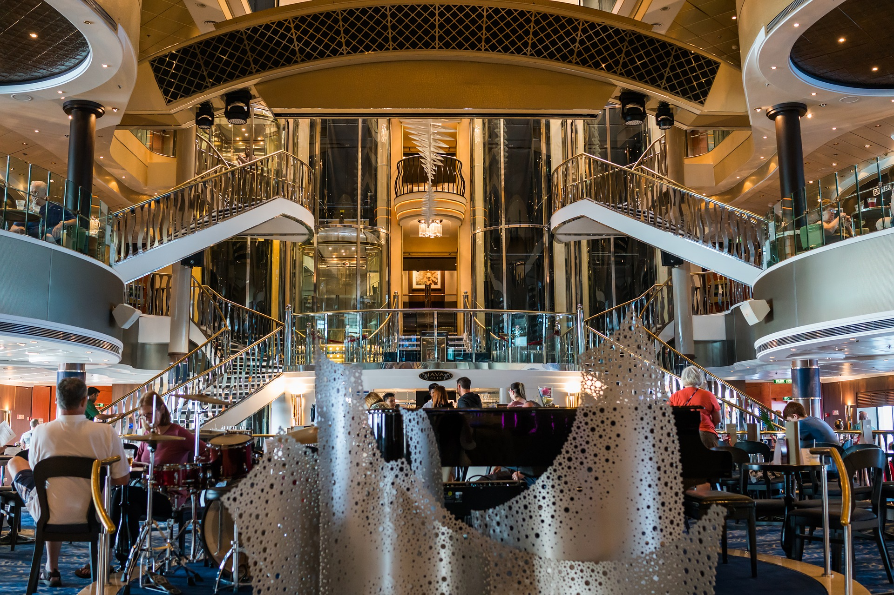
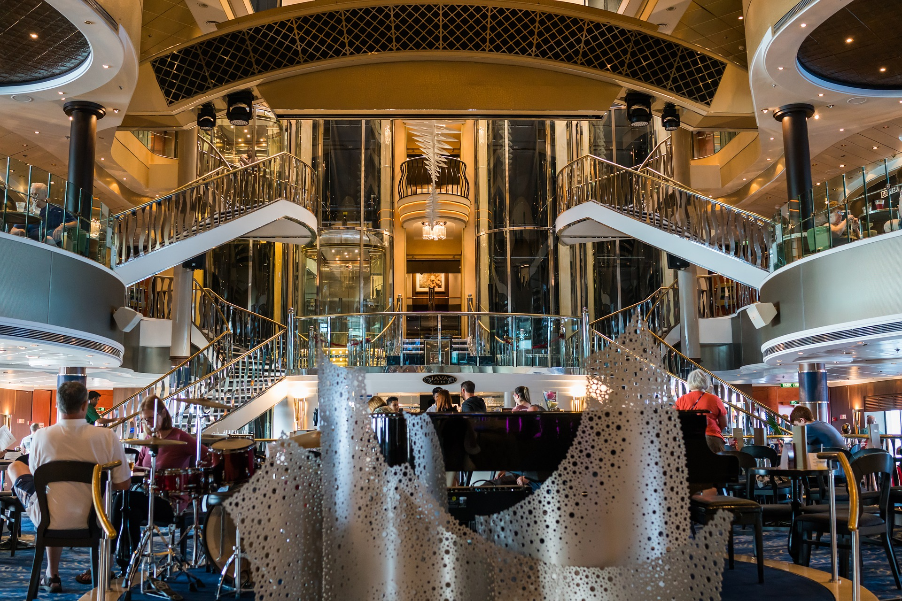

Caraïbes
Caraïbes« La mer est un espace de rigueur et de liberté. »
Victor Hugo
 


Lit complet et salle de bain complète. Profitez des vues virtuelles du paysage en temps réel via votre téléviseur à écran plat. Cabine d'occupation simple, pas de supplément individuel requis. Jusqu'à 1 personne. Superficie : 8.9m²
Différentes sortes de cabines vue mer sont disponibles : la standard avec vue sur la mer, celle avec vue sur la promenade et enfin celle orientée vers Le parc central.
Deux lits jumeaux convertibles en très grand lit double, coin salon, salle de bain complète et balcon avec vue sur la promenade ou vue mer selon la catégorie choisie. Jusqu'à 4 personnes. Les cabines comprennent également un sèche-cheveux, une télévision, une radio, un mini réfrigérateur et un coffre-fort. Le service en cabine est disponible 24h/24 (frais supplémentaires pour le service de nuit). Superficie : 16 m²
Zone de chambre avec deux lits jumeaux qui se transforment en Royal King. Salle de bain complète avec baignoire. Espace salon avec canapé. Balcon privé. Jusqu'à 4 personnes. Superficie : 26m²
Présentation

Itinéraire
Cabines
Lit complet et salle de bain complète. Profitez des vues virtuelles du paysage en temps réel via votre téléviseur à écran plat. Cabine d'occupation simple, pas de supplément individuel requis. Jusqu'à 1 personne. Superficie : 8.9m²
Différentes sortes de cabines vue mer sont disponibles : la standard avec vue sur la mer, celle avec vue sur la promenade et enfin celle orientée vers Le parc central.
Deux lits jumeaux convertibles en très grand lit double, coin salon, salle de bain complète et balcon avec vue sur la promenade ou vue mer selon la catégorie choisie. Jusqu'à 4 personnes. Les cabines comprennent également un sèche-cheveux, une télévision, une radio, un mini réfrigérateur et un coffre-fort. Le service en cabine est disponible 24h/24 (frais supplémentaires pour le service de nuit). Superficie : 16 m²
Zone de chambre avec deux lits jumeaux qui se transforment en Royal King. Salle de bain complète avec baignoire. Espace salon avec canapé. Balcon privé. Jusqu'à 4 personnes. Superficie : 26m²
prestations